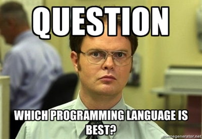
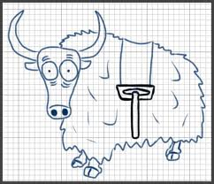
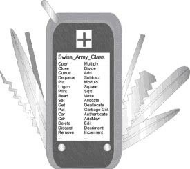
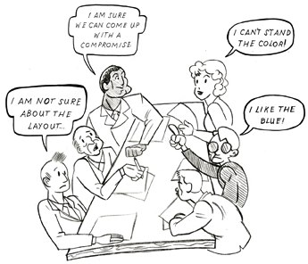

5 Reasons your code
(or design)
(or blog)
SUCKS
October 16, 2012
- Daryl Chymko / @dchymko
But first.. a story
1984
1986
1986
1988
1990
1991
1991
jNr?-|ch"5Iv1c"WZ_5_n}yy[)[New{k\r,I133;ks!N6N}0{$=@&v{m%Tv$-n*
NO CARRIER
1. You're stuck in a bubble
Two kinds:
- Un-aware (naive)
- Aware (asshole)
The Unaware
Sign 1: Your resume has one entry and its 2 lines longThe Unaware
Sign 2: You don't have a github account( or know what git is)The Unaware
Sign 3: You ignore outside influenceThe Unaware
Sign 4: Make no attempts at learning new things.The Unaware
Diagnosis: A slight case of the HeadInTheAssitus
The Asshole
The Asshole
Sign 1: This guy is almost worse. He knows about other options but chooses to be ignorant, etc, etc.The Asshole
Sign 2: You've either passionately defended or attacked the use of semi-colons in JavascriptThe Asshole
Sign 3: You have no problem saying "PHP sucks" but have trouble backing it upThe Asshole
Sign 4: Program in one language only
The Asshole
The Asshole
The Asshole
Sign 5: My way or the highwayThe Asshole
Sign 6: It's always been done that way"The Asshole
Sign 7: The *ASK*holeSolution:
- Don't be an asshole
- Learn as much as you can.
- Be open-minded
- Be a poly-glot
You can write really useful apps with the world's ugliest ugly code. And you can write apps no one wants with the most beautiful code ever.
2. Be a tricky hobbitses
main(Q,O)char**O;{if(--Q){main(Q,O);O[Q][0]^=0X80;for(O[0][0]=0;O[++O[0][0]]!=0;)if(O[O[0][0]][0]>0)puts(O[O[0][0]]);puts("----------");main(Q,O);}}
Cool, but what does it do?
O5(O2,O7,O3)char**O7;{return!(O2+=~01+01)?00:!(O2-=02>01)?printf("\045\157\012"
,O5(012,O7+01,00)):!(O2-=02>>01)?(**O7<=067&&**O7>057?O5(03,O7,*(*O7)++-060+010
*O3):O3 ):!(O2 -=-O3- ~O3)? (072>**
O7&&060 <=**O7 ?O5(04 ,O7,012 *O3-060
+*(*O7 )++):O3 ):!(O2 -=!O3+ !!O3)?(
**O7>057 &&**O7 <=071? O5(05, O7,*(*
O7)+++ O3*020 -060): **O7<= 0106&&
00101<= **O7?O5 (05,O7 ,020*O3 +*(*O7)
++-067) :0140<** O7&&** O7<0147 ?O5(05,
O7,-0127 +*(*O7 )+++020 *O3):O3 ):!(
O2-=02- 01)?(** O7==050 ?050** ++*O7,
O5(013, O7,O5( 012,O7 ,00)):* *O7<056
&&054<* *O7?055 **++* O7,-O5( 06,O7,
00):054 >**O7&& 052<** O7?050* *(*O7)
++,O5(06 ,O7,00 ):!(** O7^0170 )||!(
0130^** O7)?*++ *O7,O5 (05,O7 ,00):*
*O7==0144 ||**O7 ==0104 ?++*O7 ,O5(04,
O7,00): O5(03 ,O7,00 )):!-- O2?(*
*O7==052 ?O5(07 ,O7,O3* (*++*O7 ,O5(06
,O7,00) )):!( 045-** O7)?O5( 07,O7,
O3%(03+( *O7)++, O5(06, O7,00) )):!(**
O7^057)?O5(07, O7,O3/( 03-*++ *O7,O5(
06,O7,00))):O3 ):!(O2 +=01-02 )?O5(07
,O7,O5(06,O7, 00)):!( O2+=-02/ 02)?(!(*
*O7-053)?O5(011,O7,O3+(++*O7,O5(010,O7,00))):!(055^**O7)?O5(011,O7,O3-(03+*(*O7
)++,O5(0010,O7,00))):O3):!(O2-=0563&0215)?O5(011,O7,O5(010,O7,00)):(++*O7,O3);}
Most irrregular expression
Solution:
- Stop coding what is cool, and start coding what works/is maintainable
Simplify, simplify.
~ Thoreau- Use proven solutions instead of custom or 'cool' solutions
Always code as if the person who ends up maintaining your code is a violent psychopath who knows where you live.
-Jeff Atwood
3. You're a "re-active" coder
4. You are the over-architect

Also See "Bike Shedding"
Also see Ren & Stimpy
Also see Sunset Boulevard (1950)

Solution:
- Focus
- JPL
5. You involve the wrong people (or too many)

6.You lack passion
Suck it up Princess

Move on

Summary
- You're stuck in a bubble
- Be a tricky hobbitses
- You're a "re-active" coder
- You are the over-architect
- You involve the wrong people (or too many)
- You lack passion
Resources:
- The Joel Test
- Anti-Patterns
THE END
BY Daryl Chymko / darylchymko.ca
@dchymko
github.com/dchymko/reveal.js